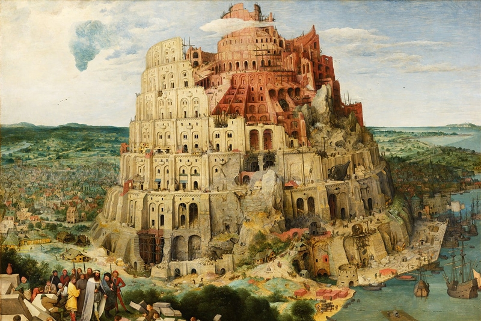
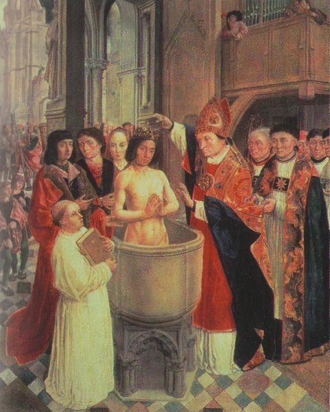
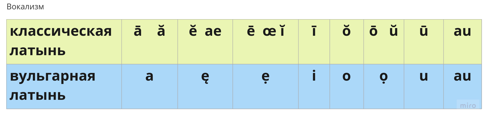
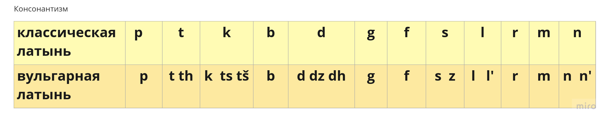
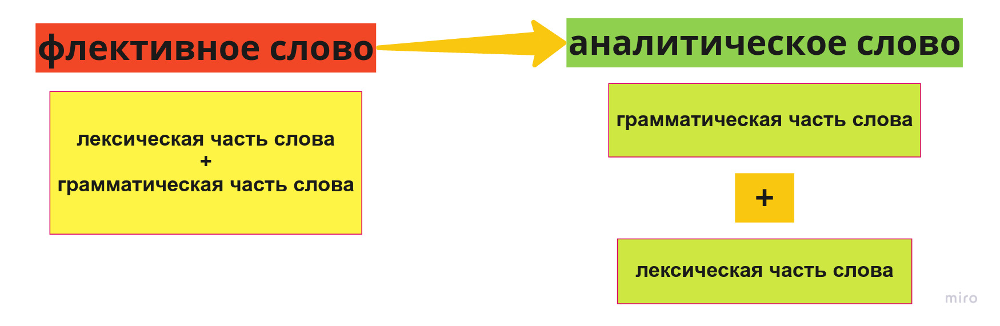

История французского языка
Содержание
- Предмет истории языка
- Внешняя и внутренняя история языка
- Проблема периодизации французского языка
- Классификации романских языков
- Романизация
- Германизация
- Трансформация классической и вульгарной латыни
- Словарный состав вульгарной латыни
- Фонетический состав вульгарной латыни
- Грамматический строй вульгарной латыни
История языка - наука об изменениях, эволюции языка.
Изучение изменений фонетического строя, грамматической системы, лексического состава.
Изучение форм существования языка, их стилистической и социальной дифференциации.
Способы языкового выражения
- Система языка - совокупность единиц языка и моделей, по которым они сочетаются, образуя высказывания.
- Норма — это представление носителей языка о правильном и неправильном в языке и речи.
- Узус — это правила ситуативного использования языка.
Не успел я за заставу отъехать, как вдруг во всей губернии наступило благорастворение воздухов. Полициймейстер — не скачет, квартальные — не бегут, городовые — не усердствуют. М. Е. Салтыков-Щедрин, «Праздный разговор», 1885 г.
- уста ланиты побледнели и стан скрутило аки крюк зело персты окоченели каюк
- очаровали глеба перси ланиты шуи и уста хотел лобзанью он предаться но в лик он получил с ноги
Проблемы курса истории языка: внешняя и внутренняя история языка
- Внешняя история языка — часть общей духовной и культурной истории определенного языкового сообщества
- Внутренняя история языка
Историческая лингвистика: историческая фонетика, историческая грамматика (морфология и синтаксис) и историческая лексикология
Изменения графических норм старофранцузского и современного французского языка
- Pro Deo amur et pro christian poblo et nostro commun salvament, d'ist di in avant, in quant Deus savir et podir me dunat, si salvarai eo cist meon fradre Karlo et in aiudha et in cadhuna cosa, si cum om per dreit son fradra salvar dift, in o quid il mi altre- si fazet et ab Ludher nul plaid nunquam prindrai qui, meon vol, cist meon fradre Karle in damno sit.
- Pour l'amour de Dieu et pour le salut du peuple chrétien et notre salut commun, de ce jour en avant, autant que Dieu m'en donnera le savoir et le pouvoir, je défendrai mon frère Charles, et l'aiderai en toute circonstance, comme on doit selon l'équité défendre son frère, pourvu qu'il en fasse autant à mon égard. Et jamais je ne prendrai avec Lothaire aucun arrangement qui, de ma volonté, puisse être nuisible à mon frère Charles.
Изменения произносительных норм среднефранцузского и современного французского языка
Рондо Карла Орлеанского в средневековом и современном произношении
Периодизация французского языка
- Предыстория французского языка
- Старофранцузский период (IX—XIII вв.)
- Среднефранцузский период
- Новофранцузский период (XVII—XVIII вв.)
- Современный французский язык (XIX—XXI вв.)
Классификации романских языков
Данте «О народном красноречии»:
- langue d’oil
- langue d’oc
- langue de si
Научная классификация романских языков, основанная на сравнительно-историческом методе - Ф. Диц.
Современные критерии классификации: социолингвистический (Алисова Т. Б., Репина Т. А.) и собственно лингвистический.
Классификация романских языков (цит. по Н. А. Шигаревской):
- галло-романская подгруппа (французский, провансальский, каталанский языки)
- иберо-романская подгруппа (испанский, португальский языки)
- дако-романская подгруппа (румынский, молдавский, далматинский языки)
Романизация Галлии
Романизация – распространение латинского языка и римской культуры на завоеванных Римом территориях, ставших римскими провинциями.
Этапы романизации
- III-II в. до н.э. Присоединение к Риму Цизальпийской Галлии (совр.Франция, Швейцария), позднее и Трансальпийской Галлии (совр.Сев.Италия), основание Нарбоннской провинции (Прованс).
- 58-51 гг. – второе римское завоевание. Романизация остальной части Галлии.
Германизация Галлии (V-VIII вв.)
Конец V в. – образование первого франкского государства. Династия Меровингов.
842 г. – Страсбургские присяги
768-814 гг. - правление Карла Великого.
843 г. – Верденский договор. Раздел империи Карла Великого
877 г. – окончательное разрушение империи Карла Великого
Теория стратов
- Субстрат – язык населения, первоначально обитавшего на данной территории; следы влияния этого языка в языке пришельцев.
- Суперстрат – язык пришельцев по отношению к языку первоначально обитавшего населения; следы влияния языка пришельцев на язык коренного населения.
- Адстрат – результат влияния одного языка на другой при длительных контактах народов, говорящих на этих языках, когда не происходит этнической ассимиляции и растворения одного языка в другом.
Трансформация классической и вульгарной латыни
Словарный состав вульгарной латыни
Фонетический строй вульгарной латыни
Изменение характера ударения: мелодическое ударение сменилось силовым.
Изменение тембра гласных.
Состав гласных к III-IV вв.
Дифтонгизация
- e-ie
pede-piet-pied
- o-uo-ue
nove-nuof-nuef; bovem-boef
- e-ei
mense-mese-meis
- o-ou-eu
hora-oure-heure; gula-gola-goule-gueule
Согласные
- Аффрикаты ts, tš, dz, dž
- Межзубные th, dh
- Мягкие l’, n’
- Звонкая z
- Согласный j
Грамматический строй вульгарной латыни
Грамматические изменения: редукция, изменение структуры слова.
Разрушение флексии и рост аналитических средств выражения грамматических категорий.
Сокращение типов склонения существительных (5 >> 3).
Перераспределение глаголов по типам спряжения, переоформление категорий (изменения формы и значения).